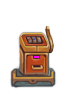
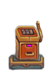

Improved ADOM Guidebook
Previous - TOC - Next
Winnings table - Casino shopkeeper - Casino guards - Hugo - Robbing the Casino -
Robbing consequences
Casino
Color map
The Casino is found on D: 30 or D: 31.
The guaranteed monsters found here are casino guards (the @s outside the Great Gift Shoppe),
a Big Casino Guard Hugo @ (guarding the down staircase), the shopkeeper (the @ inside the Great Gift Shoppe),
and a master mimic m inside the Great Gift shoppe. The $s in the body of the Casino are not piles of gold, but rather slot machines.
There will be a number of non-hostile monsters wandering around the Casino and the Great Gift Shoppe.

 
It is possible to win essentially unlimited amounts of gold from the slot machines. Intrinsic Dooming, Cursing, Lucky and Fate Smiles have no effect.
Wearing items that grant Luck (the hidden property) or the Lucky/Fate smiles intrinsics make no difference. The fastest way to accumulate money is to
choose a machine that costs 24 gold pieces to play and handle the lever. Place a heavy object on the spacebar of your keyboard.
Check back after five minutes or so by picking up the gold on the floor. There should be quite a pile.

It is possible to win essentially unlimited amounts of gold from the slot machines. Intrinsic Dooming, Cursing, Lucky and Fate Smiles have no effect.
Wearing items that grant Luck (the hidden property) or the Lucky/Fate smiles intrinsics make no difference. The fastest way to accumulate money is to
choose a machine that costs 24 gold pieces to play and handle the lever. Place a heavy object on the spacebar of your keyboard.
Check back after five minutes or so by picking up the gold on the floor. There should be quite a pile.
As long as the technique above is used – simply leaving the spacebar depressed – all of this gambling will take place during a single game
turn, so the PC will not be spending hours of game time in the Casino getting corrupted. This is after all D: 30 or D: 31, moderately deep in the
CoC. So resist the temptation to check on your winnings every 30 seconds! ;-)
A possible side effect of long gambling sessions is stunning. Ideally wear a source of stun resistance or have the intrinsic. Alternatively, prayer will
remove stunning. Despite the fact that only a single game turn passes, it is also possible to become Very Hungry. Fortunately, the PC cannot starve to death while playing,
so it is not necessary to eat before using the slot machines.
In R+, excessive gambling also corrupts, making it a less viable option.
This implies, of course, that it is possible to buy everything in the Great Gift Shoppe. But how to carry it? Since there is an unlimited amount of gold available,
a (blessed!) girdle of greed can solve that problem. Hugo will often allow a net winner passage if she simply goes to a slot machine and loses one round.
Try more than once if necessary.
The payout from the slot machines follows a precise formula, shown below:
3.13.1 Casino winnings
| Item | Two alike | Three alike
|
|---|
| kobold | 1x | 1x
|
| goblin | 4x | 8x
|
| hobgoblin | 9x | 27x
|
| gnoll | 16x | 64x
|
| ogre | 25x | 125x
|
| wizard | 36x | 216x
|
| ettin | 49x | 343x
|
| giant | 64x | 512x
|
| hero | 81x | 729x
|
| treasure hoard | 100x | 1000x
|
| magical wand | 121x | 1331x
|
| magical ring | 144x | 1728x
|
| magical weapon | 169x | 2197x
|
| magical armor | 196x | 2744x
|
| artifact | 225x | 3375x
|
| ancient hero | 256x | 4096x
|
| dragon | 289x | 4913x
|
| ancient dragon | 324x | 5832x
|
As an example, two goblins results in a return of 4x the original bet, for a profit of 3x the original bet. The average payout works out to
approximately 24x the original bet. This has been verified empirically, and agrees with theory.
Teleportation operates in a strange (and frustrating) way in the Great Gift Shoppe; upon teleportation, the PC will be immediately teleported next to the Casino shopkeeper.
After the shopkeeper is angered, this restriction is removed.
3.13.2 Casino shopkeeper @

| Level: 11, DV: 46, PV: 20, Hits: 890, Attacks: 6, Damage: 3d6+18, Speed: 200. |
The Casino shopkeeper is worth killing if the PC can manage it, however, since he counts for several hundred thousand experience points. He is a dangerous foe,
however, who frequently panics when injured.
3.13.3 Casino guards @


| Level: 1, DV: 12, PV: 6, Hits: 90, Attacks: 2, Damage: 4d6+6, Speed: 100. |
Casino guards are quite strong and can paralyze the PC on damaging hits; however, the PC should
usually be prepared for monsters of their level at the stage that they're likely to encounter them.
Still, though, they can be dangerous if the PC is surrounded by guards – particularly if the Big
Casino Guard or shopkeeper joins the fight whilst the PC is paralyzed.
3.13.4 Hugo, the big casino guard @

| Level: 1, DV: 19, PV: 24, Hits: 300, Attacks: 2, Damage: 6d12+12, Speed: 100. |
If the player wins any money at slot machines, he will block the down stairs and not allow passage unless that much money and more is spent at the Great Gift Shoppe.
Note that he can easily be removed from the stairs by teleporting him; this will not make him hostile and he will still act as if he is standing on the stairs.
As of R++, teleporting him away will make him hostile. In battle, not only is he capable of dealing huge amounts of damage, but he may
paralyze the PC with each damaging hit, making him potentially lethal in melee combat. Therefore, the PC should generally be careful not to anger him unless they are
prepared with ranged attacks and/or paralyzation resistance. He is immune to confusion, stunning, and paralysis. While he is unique and there is only ever one Big
Casino Guard generated, more can be wished for.
3.13.5 Strategies for robbing the Casino
It is possible to use Ventriloquism as usual to confuse the Casino shopkeeper. Remember if the skill is not at 100 he may become hostile in the next turn, so
doing this under cover of Darkness is a wise precaution. A tactic that accomplishes the same result (no cursing, no alerting the guards) is to zap a wand of far slaying
at him from very far away, 15 tiles or more. These are both risky since a hostile Casino shopkeeper is a formidable opponent. The best sequence of events is to gather
everything the PC wants, anger the shopkeeper and teleport straight to the down staircase.
There are a number of events that will cause all the monsters to become hostile whether or not the PC has actually picked up anything from the Great Gift Shoppe.
Directly attacking the guards or shopkeeper or zapping a wand of destruction that damages any of the guards or the walls of the Great Gift Shoppe are examples.
Once the monsters become hostile, a number of things happen. First, the number of guards on the level approximately triples. They cluster around both the up and down
staircases and are plentiful elsewhere. Second, the teleportation restrictions inside the Great Gift Shoppe cease. This means the PC is free to teleport to any location on
the level, but since the up and down staircases will be blocked by guards, it is not possible to teleport to these locations and leave the level.
Invisibility is strange on the level. The casino guards and the Big Casino Guard see invisible. The shopkeeper welcomes an invisible PC when
she enters the Great Gift Shoppe, but when an invisible PC picks up an item, the shopkeeper does not immediately block the door. The standard
"shopkeeper stares at your position with great intensity" message must be generated before he blocks the door. However, the shopkeeper instantly
sounds an alarm when an undetected invisible PC who has picked up an item leaves the Great Gift Shoppe. Despite this, the shopkeeper does not see
the invisible PC as she flees through the body of the Casino.
None of the monsters on the level are able to see in darkness. However, some will still cluster around the PC in darkness, while others, including
Hugo, who ordinarily blocks the down staircase, will wander aimlessly. This means that if a PC needs to rest and recover hitpoints,
or pray for healing, or drink healing potions, darkness is your friend. A PC can stand in one spot indefinitely in the dark. Not anymore.
The tendency of the monsters to cluster around the PC or wander about also means they will leave the vicinity of the staircases. Thus a PC can rob the Casino, cast
Darkness, wait, then teleport to the down staircase. This is risky, however, since if the PC is doomed by robbing the Casino (see below) there
is a 1 in 1000 chance of an instadeath each turn from a grue attack (section 0.13.4).
The stats for the shopkeeper above should make it clear that speed is critical when robbing the Casino. Anything that increases speed is
valuable – rings of speed, speed boosting potions and especially seven league boots. It is possible to make the shopkeeper hostile by throwing
missiles or zapping a spell at him, ideally from as far away as possible, then literally outrun him out of the Great Gift Shoppe. This is one
way the Casino can be robbed without any spells whatsoever.
The stats should also make it clear that killing him is worth many experience points. This is a consideration for those PCs who desperately need experience.
3.13.6 Consequences of robbing the Casino
The consequences of robbing the Casino vary according to a couple of factors. First is the alignment of the PC. Lawful PCs will likely be
cursed and doomed. Neutral PCs will likely be cursed, perhaps doomed. Chaotics will probably get away with no Cursing or Dooming. Lawful and
neutral PCs will move their alignment towards chaotic. This may or may not be visible on the main screen. It is known for PCs to be so lawful
by this point in the game that their alignment does not vary from L+ despite robbing the Casino. The second factor is exactly what transpires
during the robbery. Killing the shopkeeper in the process of robbing the Casino is not recommended for crowned champions of Law or Balance, of
course. Attacking the guards on the way out or after dragging them down to the next level should not cause an alignment drop as they will be
hostile at that point.
The Cursing and/or Dooming is obviously the biggest problem PCs face after robbing the Casino. Fortunately, there is a shortcut to the surface
of the Drakalor Chain (see the next section 3.14) available one or two levels below the Casino. This makes it possible to
get to a coaligned altar near the surface quickly and sacrifice in order to get rid of the unwanted Cursing or Dooming, although it is possible at
this point in the game that the player might want to exploit those intrinsics. In any case, remember where those coaligned altars are near the surface! If
you plan to rob the Casino, they can be essential.
Updated October 1st, 2016